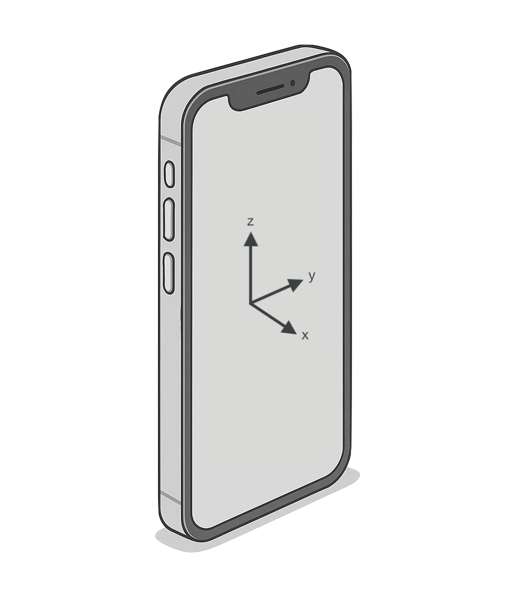

The Intermediate Axis Theorem, or why you can't spin your phone a certain way
Take a solid rectangular prism, such as a phone or book. It has three principal axes, all perpendicular to each other.
For an object like a phone, which can be assumed to have constant density and different lengths along all three axes, the principal moments of inertia are ordered such that \[ I_{xx} \lt I_{yy} \lt I_{zz} \label{axes}\tag{1} \] and they are all positive.
Now when the phone is spun, people have noticed that rotations around the \(x\)- and \(z\)-axes are stable, but whenever you try to spin it around the \(y\)-axis – the intermediate axis – it tumbles. Try it!
Here I will use classical mechanics to show how this behaviour emerges. It will turn out that for rotations about the \(x\)- and \(z\)-axes, small perturbations just oscillate, always returning to the original rotation. However, for the intermediate \(y\)-axis, small disturbances may grow exponentially quickly, meaning the rotation is unstable. It's all down to the ordering of the moments of inertia from \(\eqref{axes}\). The explanation will involve vectors and matrices, plus a little thinking about rotating reference frames.
Working with rotating axes
Most explanations of the Intermediate Axis Theorem start from Euler's equations of motion for a rigid body. Here I will derive them. If you're happy with where they come from, or taking them as given, skip to the next section.
Dynamics in classical mechanics stem from Newton's second law, which I express as \[ \vec{f} = \frac{\dif \vec{p}}{\dif t} = \frac{\dif }{\dif t} \left( m \vec{v} \right) \] where \(\vec{f}\) is the overall force on the object and \(\vec{p}\) is its momentum. This is valid in an intertial reference frame. The rotational analogue is also valid: \[ \vec{\tau} = \frac{\dif \vec{J}}{\dif t} = \frac{\dif}{\dif t}\left( I^\prime \vec{\omega} \right) \label{torque}\tag{2} \] with \(\vec{\tau}\) the overall torque on the object and \(\vec{J} = I^\prime\,\vec{\omega}\) the angular momentum. Here \(I^\prime\) is a \(3 \times 3\) matrix whose components describe the distribution of mass of the phone in the fixed coordinate system. We call it the moment of inertia tensor. \(\vec{\omega}\) is the angular velocity.
Although perfectly correct, it's difficult to carry out an analysis in this coordinate system because the axes that form it are fixed and the phone is rotating through them. This means the components of the moment of inertia tensor \(I^\prime\) are changing with time to take this rotation into account. It would be better to use a coordinate system whose axes rotate with the object, so that \(I\) stays constant.
Let's define some quantities using the reference frame of the phone, where we use the principal axes along \(\hat{\vec{e}}_x\), \(\hat{\vec{e}}_y\), and \(\hat{\vec{e}}_z\). In this partiular basis \(I\) is diagonal (that is, only \(I_{xx}\), \(I_{yy}\), and \(I_{zz}\) are non-zero) which makes things a bit cleaner. Define \[\vec{L} = I_{xx} \, \vec{\omega}_x \, \hat{\vec{e}}_x + I_{yy} \, \vec{\omega}_y \, \hat{\vec{e}}_y + I_{zz} \, \vec{\omega}_z \, \hat{\vec{e}}_z\] as the angular momentum of the phone with respect to the rotating axes.
It's important to note (and easy to get confused otherwise) that we're still actually considering the physics of the phone in a fixed, inertial frame, just that the vectors and matrices we write down use a coordinate system whose axes, \(\hat{\vec{e}}_x\), \(\hat{\vec{e}}_y\), and \(\hat{\vec{e}}_z\), are rotating. I could write \(\hat{\vec{e}}_x\!\left(t\right)\), etc., to signify that the axes are changing direction with time. (If we were to do the physics in the frame of the phone they would be stationary by definition.)
Now I could re-write the first equality of \(\eqref{torque}\) as \[ \vec{T} = \frac{\Dif \vec{L}}{\Dif t} \label{torque'}\tag{3}\] where I have used \(\Dif\over\Dif t\) for the differentiation operator to signify that the axes for which \(\vec{L}\) is defined are rotating. \( \vec{T} = R\!\left(t\right) \, \vec{\tau} \) is just the torque vector \(\vec{\tau}\) rotated to align with the object.
The axes change too!
Say we have some vector \(\vec{a} = \sum_i a_i \, \hat{\vec{e}}_i\), defined on a general basis of unit vectors \(\left\{\hat{\vec{e}}_1, \hat{\vec{e}}_2, \ldots \right\}\) that are rotating. Express the above derivative as \[ \frac{\Dif \vec{a}}{\Dif t} = \sum_i \frac{\dif}{\dif t} \left( a_i \, \hat{\vec{e}}_i \right) = \sum_i \left( \frac{\dif a_i}{\dif t} \, \hat{\vec{e}}_i + a_i \, \frac{\dif \hat{\vec{e}}_i}{\dif t} \right) \] where the last equality follows from the product rule. A little geometrical thinking leads to the realisation that \[ \frac{\dif \hat{\vec{e}}}{\dif t} = \vec{\omega} \times \hat{\vec{e}} \] and therefore \[ \frac{\Dif \vec{a}}{\Dif t} = \frac{\dif \vec{a}}{\dif t} + \left( \vec{\omega}\times\vec{a} \right) \] Now swapping the order of the cross-product and inserting this result into \(\eqref{torque'}\) gives the answer \[ \vec{T} = \frac{\dif \vec{L}}{\dif t} - \left( \vec{L}\times\vec{\omega} \right) \] Since \(I\) is contant, this is often written (using the definition of \(\vec{L}\)) as \[ \vec{T} = I \dot{\vec{\omega}} - \left[\left(I\vec{\omega}\right)\times\vec{\omega}\right]\label{euler}\tag{4}\] which is the vector representation of Euler's equations of motion for a rigid body. Remember that \(I = \text{diag}\!\left(I_{xx}, I_{yy}, I_{zz}\right)\) is a matrix.
The spinning phone
For torque-free situations, such as the spinning phone, \(\vec{T} = \vec{0}\) and Euler's equations \(\eqref{euler}\) simplify to \[ I \dot{\vec{\omega}} = \left(I \vec{\omega}\right) \times \vec{\omega} \label{euler'}\tag{5} \]
Rotations around the \(x\)-axis
Let's say the phone is spinning freely around the \(x\)-axis (along which it has the smallest moment of inertia) but a small perturbation gives it some angular velocity about its other axes, \[ \vec{\omega} = \begin{pmatrix} \omega_x \\ \lambda \\ \mu \end{pmatrix} \] where \(\lambda, \mu \ll \omega_x\). Then the components of \(\eqref{euler'}\) become \[ \begin{align} I_{xx} \, \dot{\omega}_x &= \left( I_{yy} - I_{zz} \right) \, \lambda \, \mu \label{eulerxx}\tag{6a}\\ I_{yy} \, \dot{\lambda} &= \left( I_{zz} - I_{xx} \right) \, \omega_x \, \mu \label{eulerxy}\tag{6b}\\ I_{zz} \, \dot{\mu} &= \left( I_{xx} - I_{yy} \right) \, \omega_x \, \lambda \label{eulerxz}\tag{6b} \end{align} \] Since \(\eqref{eulerxx}\) is second-order in the perturbations, the right hand side is negligible and so this equation tells us that \(\omega_x\) is a constant of the motion, as you might expect: the phone keeps spinning around the \(x\)-axis.
Differentiating \(\eqref{eulerxy}\) and substituting \(\dot{\mu}\) from \(\eqref{eulerxz}\) gives the uncoupled equation of motion \[ \ddot{\lambda} = \frac{I_{zz} - I_{xx}}{I_{yy}} \, \frac{I_{xx} - I_{yy}}{I_{zz}} \, \omega_x^2 \, \lambda \triangleq -\Omega_x^2 \, \lambda \label{eomlambda}\tag{7}\] where \(\Omega_x^2\) is positive due to the ordering of the moments of inertia in \(\eqref{axes}\). Similarly, \[ \ddot{\mu} = -\Omega_x^2\, \mu \label{eommu}\tag{8} \]
The solutions to the equations of motion \(\eqref{eomlambda}\) and \(\eqref{eommu}\) are simple harmonic oscillators with angular frequency \(\Omega_x\): \[ \begin{align} \lambda(t) &= A \cos\!\left(\Omega_x t\right) + B \sin\!\left(\Omega_x t\right) \\ \mu(t) &= C \cos\!\left(\Omega_x t\right) + D \sin\!\left(\Omega_x t\right) \end{align} \] We can conlude that small fluctuations in the rotation about the \(x\)-axis oscillate stably around it.
What about the \(z\)-axis?
A virtually identical treatment follows for rotations around the \(z\)-axis with the rotational velocity vector \[ \vec{\omega} = \begin{pmatrix} \lambda \\ \mu \\ \omega_z \end{pmatrix} \] where \(\lambda, \mu \ll \omega_z\). This time the equations of motion for the perturbations are \[ \begin{align} \ddot{\lambda} &= -\Omega_z^2 \, \lambda \\ \ddot{\mu} &= -\Omega_z^2 \, \mu \end{align} \] with \[ \Omega_z^2 \triangleq \frac{I_{zz} - I_{yy}}{I_{xx}} \, \frac{I_{zz} - I_{xx}}{I_{yy}} \, \omega_z^2 \] Once agan, \(\Omega_z^2\) is positive due to the ordering from \(\eqref{axes}\), leading to stable oscillations around the rotation about the \(z\)-axis.
The intermediate axis
You might be able to see what's going to heppen here. For rotation around the intermediate \(y\)-axis, the angular velocity is \[ \vec{\omega} = \begin{pmatrix} \mu \\ \omega_y \\ \lambda \end{pmatrix} \] Then the first-order, non-trivial, Euler equations are \[ \begin{align} I_{xx} \, \dot{\mu} &= \left( I_{yy} - I_{zz} \right) \, \lambda \, \omega_y \\ I_{yy} \, \dot{\omega}_y &= \left( I_{zz} - I_{xx} \right) \, \mu \, \omega_y \end{align} \] leading to the euqations of motion \[ \begin{align} \ddot{\mu} &= \Omega_y^2 \, \mu \\ \ddot{\lambda} &= \Omega_y^2 \, \lambda \end{align} \] with \[ \Omega_y^2 \triangleq \frac{I_{yy} - I_{zz}}{I_{xx}} \, \frac{I_{xx} - I_{yy}}{I_{zz}} \, \omega_y^2 \] which is positive from \(\eqref{axes}\). In this case, thee is no minus sign on the right hand side of the equations of motion. This means their solutions are real exponentials: \[ \begin{align} \mu(t) &= A e^{\Omega_y t} + B e^{-\Omega_y t} \\ \lambda(t) &= D e^{\Omega_y t} + C e^{-\Omega_y t} \end{align} \] In our case of the spinnning phone, the initial conditions that determine the constants \(A, B, C, D\) are essentially random. Therefore, for rotations about the intermediate axis, slight perturbations will grow exponentially quickly and the phone will tumble.